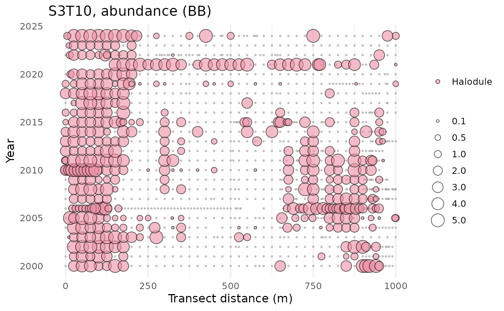
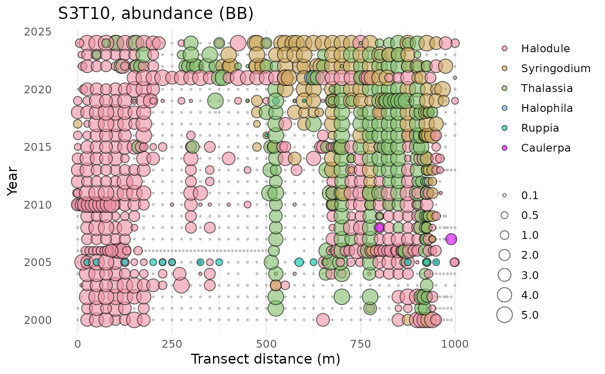
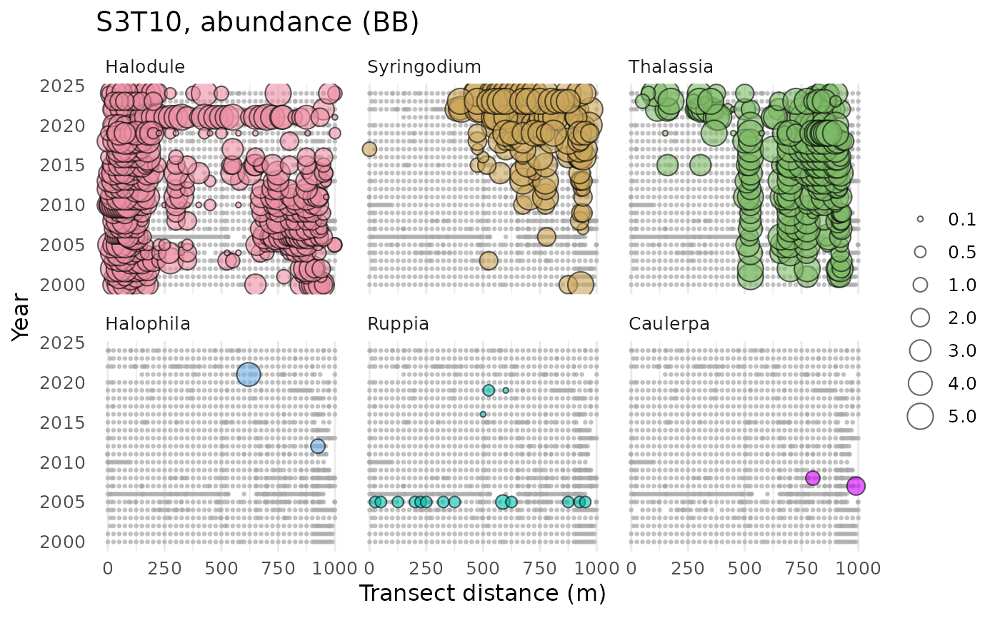

Plot results for a seagrass transect by time and location
Source:R/show_transect.R
show_transect.RdPlot results for a seagrass transect by time and location
Usage
show_transect(
transect,
site,
species = c("Halodule", "Syringodium", "Thalassia", "Halophila", "Ruppia", "Caulerpa",
"Dapis", "Chaetomorpha"),
yrrng = c(1998, 2024),
varplo = c("Abundance", "Blade Length", "Short Shoot Density"),
base_size = 12,
facet = FALSE,
ncol = NULL,
plotly = FALSE,
width = NULL,
height = NULL,
sppcol = NULL
)Arguments
- transect
data frame returned by
read_transect- site
chr string indicating site results to plot
- species
chr string indicating one to many of which species to plot
- yrrng
numeric indicating year ranges to evaluate
- varplo
chr string indicating which variable to plot
- base_size
numeric indicating text scaling size for plot
- facet
logical indicating if plots are separated into facets by species
- ncol
numeric indicating number of columns if
facet = TRUE- plotly
logical if plot is created using plotly
- width
numeric for width of the plot in pixels, only applies of
plotly = TRUE- height
numeric for height of the plot in pixels, only applies of
plotly = TRUE- sppcol
character vector of alternative colors to use for each species, must have length of six
Value
A ggplot object
Details
All sites along a transect that were surveyed are shown in the plot, including those where the selected species were not found. The latter is colored in grey hollow points. Species options include Halodule, Syringodium, Thalassia, Halophila, Ruppia, Caulerpa (attached macroalgae), Dapis (cyanobacteria), and/or Chaetomorpha (drift green algae). Drift or attached macroalgae and cyanobacteria (Dapis) estimates may not be accurate prior to 2021.
Note that if plotly = TRUE, the size legend is not shown.
Examples
if (FALSE) { # \dontrun{
transect <- read_transect()
} # }
# one species
show_transect(transect, site = 'S3T10', species = 'Halodule', varplo = 'Abundance')

# multiple species, one plot
show_transect(transect, site = 'S3T10',
species = c('Halodule', 'Syringodium', 'Thalassia', 'Halophila', 'Ruppia',
'Caulerpa', 'Dapis', 'Chaetomorpha'),
varplo = 'Abundance')

# multiple species, multiple plots
show_transect(transect, site = 'S3T10',
species = c('Halodule', 'Syringodium', 'Thalassia', 'Halophila', 'Ruppia',
'Caulerpa', 'Dapis', 'Chaetomorpha'),
varplo = 'Abundance', facet = TRUE)
